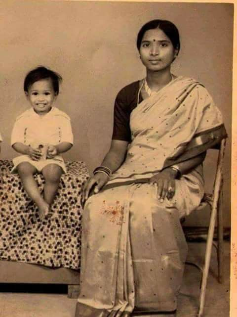
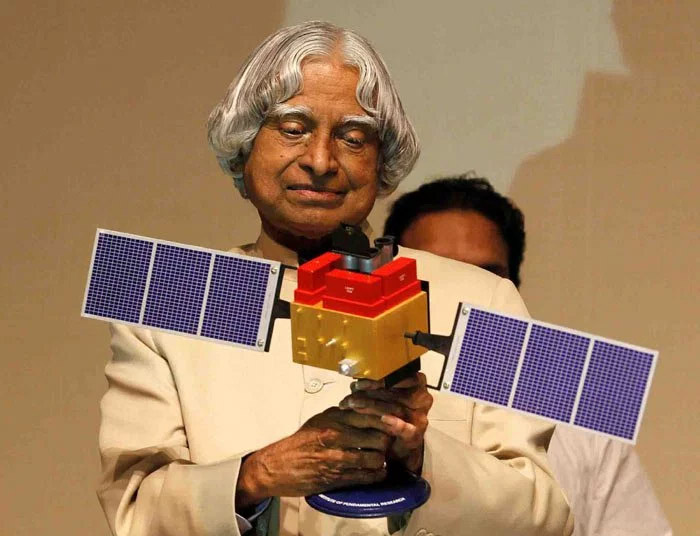
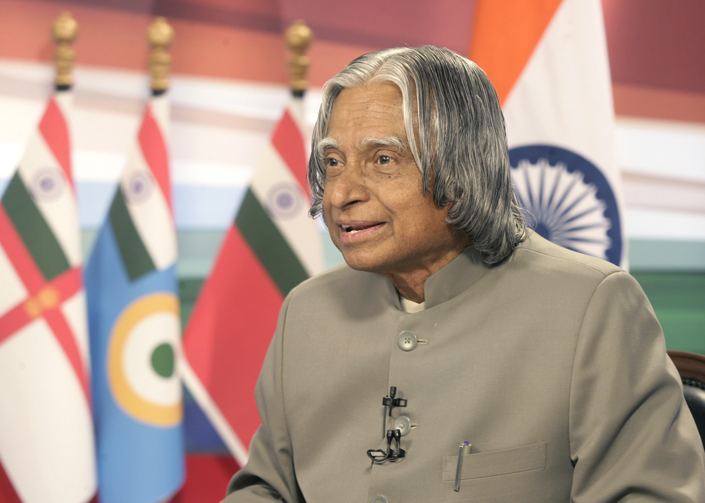
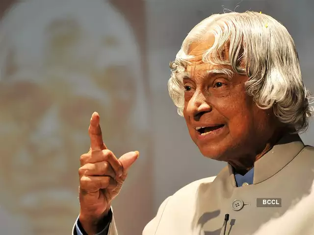

Early Life and Education
APJ Abdul Kalam was born on October 15, 1931, in Rameswaram, Tamil Nadu. He grew up in a humble family and was a bright student from an early age. He went on to study aerospace engineering and became a scientist and engineer at the Indian Space Research Organisation (ISRO).
Contribution to Science and Technology
Kalam played a pivotal role in India's civilian space program and military missile development. He was known as the "Missile Man of India" for his work on the development of ballistic missile technology. He was also the chief architect of India's first satellite launch vehicle.
Presidency
Kalam was elected as the 11th President of India in 2002, serving in the role until 2007. During his presidency, he focused on promoting education and inspiring young people to pursue careers in science and technology.
Legacy
APJ Abdul Kalam passed away on July 27, 2015, but his legacy lives on. He inspired a generation of young Indians to pursue their dreams and contribute to the country's development. His dedication to science and technology continues to be an inspiration to many.